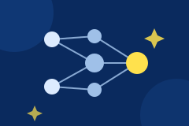
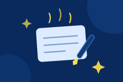
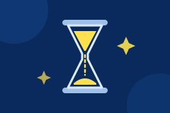

セミナー情報、AI活用のヒント、感動セールスの気づき、現場の学び。ここは更新され続ける場所です。

効率化だけのAI導入が顧客離脱を生むメカニズムと、感動創造部×AIの解決策。

エースの勘を設計図に変え、AIに学習させて属人化を消す5ステップ。

AIを回すための土台の時間を、削除・簡素化・AI化の順でつくる4週間サイクル。
assets/blog-posts.js
sourceUrl
最新の発信は、LINE・メルマガ・noteでも受け取れます。
セミナー案内・無料相談はこちらから。
現場の気づきを定期配信。［登録URLは公開前に接続］
事例や考え方をじっくり。［noteのURLを差し込み］
「うちでもできる？」からで大丈夫です。無料相談はLINE・メールで受け付けています。